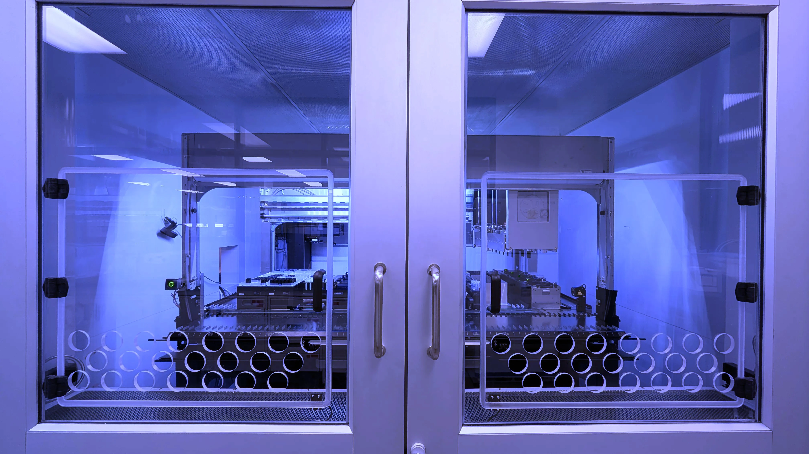
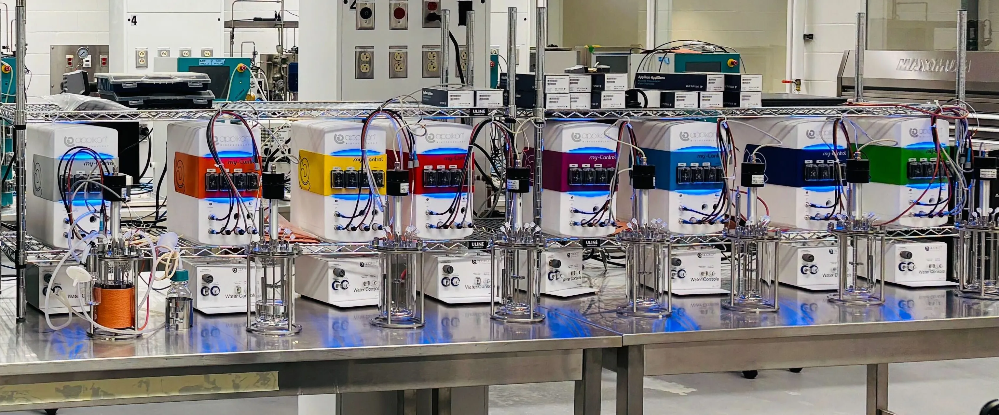

Capabilities
Our platforms support synthetic biology and genetic variant workflows, mammalian cell engineering and screening, and microbial bioprocess development. Researchers can access individual capabilities or combine them across experimental workflows.
Methods, measurements, and automation
Sequencing & library preparation
Barcoded preparation, sequencing workflows, and molecular analysis.
Genotyping & qPCR
Targeted validation, gene expression, and variant characterization.
Flow cytometry / FACS
Population analysis, single-cell measurements, and sorting.
Imaging & phenotyping
Imaging, microscopy, multiwell measurements, and phenotypic assays.
HPLC & mass spectrometry
Product, metabolite, and analytical characterization.
Automation & data workflows
Liquid handling, robotic execution, workflow integration, and LIMS-supported sample tracking

Synthetic Biology & Genetic Engineering Workflows
Automated DNA assembly, library construction, and screening workflows supporting applications from genetic variant testing to microbial strain engineering.
Library Construction & Reaction Setup
Assemble plasmids, DNA constructs, and genetic libraries using automated, miniaturized reaction setup, including arrayed or pooled designs.
Transformation & Host workflows
Support cloning, transformation, selection, and colony- handling using established methods. Organism-specific genome modification workflows are assessed by project scope.
Functional Screening & Phenotyping
Screen genetic and strain variants using colony handling, kinetic measurements, fluorescence, imaging, and phenotypic analysis.
Molecular & Analytical Characterization
Connect selected variants to sequencing preparation, genotyping, qPCR, HPLC, mass spectrometry, and other analytical readouts.
Mammalian Cell Engineering & Screening
Automated workflows for mammalian cell culture, genetic modification, reagent delivery, and arrayed cell-based assays.
Cell Culture & Maintenance Workflows
Culture, expansion, and maintenance of supported mammalian cell types, including iPSCs.
Cell Engineering & Reagent Delivery
Nucleofection, transfection, and other supported genetic modification and reagent-delivery workflows.
Arrayed Screening & Cell-Based Assays
Evaluate individual genetic perturbations, candidates, and experimental conditions in separately addressable wells using imaging, functional assays, and other analytical readouts.
Cell-Line Development & Characterization
Selected workflows for cell-line editing, clonal isolation, expansion, genotyping, and characterization.


Microbial Bioprocessing & Scale-Up
Bioprocess development, optimization, and scale-up to support the transition toward pilot-scale operations.
Process Development & Screening
Evaluate microbial candidates under controlled, process-relevant conditions using parallel small-scale systems.
Fermentation Scale-Up
Develop and scale batch, fed-batch, or continuous processes across multiple working-volume steps.
Process Optimization & Analytics
Refine media, feeding strategies, operating parameters, productivity, yield, and process performance.
Downstream Processing & Recovery
Project-scoped. Recovery, concentration, and stabilization approaches are assessed and adapted according to product characteristics and project requirements.
Our team works with researchers to implement, adapt, and automate experimental methods. Organism-specific engineering, biological design requirements, and non-routine workflows are assessed during project scoping.
Want to work with the platform?
Tell us about your project, workflow, platform-access need, or technical challenge. We’ll help identify the right capabilities and next step.